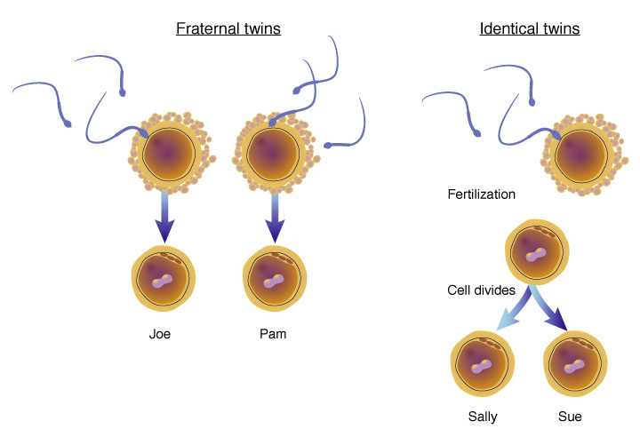

The Big Picture: The Ultimate Duet
For decades, popular media loved to frame human development as an epic heavyweight boxing match: Nature versus Nurture. But in modern psychology, we look at it entirely differently. It is not a battle; it is a complex, beautifully choreographed duet. Your biology gives you a script, but your environment decides how the play is staged.
Understanding how your genetic background interacts with external experiences is fundamental to unlocking the biological bases of behavior. Let’s dive into how heredity and environment collaborate to shape exactly who you are.
1.The Dynamic Duo: Nature and Nurture
To explain human behavior and mental processes, we first must break down the two main forces at play.
- Nature
- This represents the influence of our inherited characteristics (genetics) on personality, physical growth, and social interactions. It acts as your biological blueprint.
- Heredity
- This is the actual mechanism at work, the genetic transfer of characteristics from parents to offspring.
- DNADeoxyribonucleic Acid
- At the microscopic level, this is the molecule that carries the genetic instructions for the development, functioning, and inheritance of traits in living organisms.
When you inherit genetic instructions through your DNA (Deoxyribonucleic Acid), they do not act as a rigid guarantee of how you will behave. Instead, they provide a Genetic Predisposition, which is an increased likelihood of developing a particular disease or trait based on a person's genetic makeup. For example, you might inherit a genetic predisposition for high musical ability, but without an environment that provides instruments or lessons, that potential might remain unexpressed.
That brings us to the other half of the equation:
- Nurture
- This refers to the influence of environmental factors such as family, culture, and experience on development. Every social interaction, family dynamic, and educational opportunity you experience makes up your nurture.
The Bridge: Epigenetics
If nature and nurture are distinct forces, how do they communicate? The answer lies in Epigenetics. This is the study of how environmental factors can influence the expression of genes without changing the underlying DNA sequence. Think of your DNA like a collection of light switches; you are born with the switches (nature), but environmental factors like stress, diet, or trauma (nurture) can flip those switches on or off, altering how your body and brain operate.
2.The Evolutionary Lens
Psychologists don't just look at how your immediate family passes down traits; they look back hundreds of thousands of years using the Evolutionary Perspective. This is the study of the evolution of behavior and the mind, using principles of natural selection.
This perspective relies heavily on Natural Selection, a principle originally proposed by Charles Darwin. This is the principle that traits leading to increased reproduction and survival will most likely be passed on to succeeding generations. If an ancestral behavior, such as a fear of heights or a preference for high-energy foods, helped our ancestors survive and successfully reproduce, that trait was passed down until it became a baseline part of human psychology today.
The Dark Side of Evolutionary Thinking
While understanding natural selection helps us explain human commonalities, history shows us that these ideas can be heavily twisted. Some theorists have historically sought to apply principles of the evolutionary perspective in ways that actively discriminate against others, leading to Eugenics. This is the controversial practice or advocacy of improving the human species by selectively mating people with specific desirable hereditary traits. It represents a dark, pseudoscientific chapter where human rights were severely violated under the guise of optimizing the human gene pool.
3.The Twin Playbook: How We Study This
How do researchers actually figure out if a specific trait comes from nature or nurture? Since we cannot ethically alter human DNA in a lab to see what happens, psychologists rely on naturally occurring experiments, primarily through Twin Studies. These are research studies that compare identical and fraternal twins to examine the relative influence of genetics and environment on behavior and traits.
Researchers look closely at two distinct types of twins:
- Monozygotic Twins
- These are identical twins formed when a single fertilized egg splits into two embryos, resulting in twins who share nearly all of the same genetic material. Because their DNA is identical, any differences between them are typically attributed to their environment.
- Dizygotic Twins
- These are fraternal twins formed when two separate eggs are fertilized by two different sperm cells, resulting in twins who share about 50% of their genetic material (just like standard siblings).

By comparing Monozygotic Twins raised in the same household against those who were separated at birth and raised in entirely different environments, psychologists can calculate Heritability. This is a measure of how much differences in a trait among individuals in a population are due to genetic variation.
Twin studies aren't the only tool in this research toolkit, though. Researchers also rely on Family Studies, which examine how often a trait or disorder shows up among relatives with varying degrees of genetic relatedness, the logic being that if a trait is genetically influenced, it should appear more frequently among close relatives (like siblings) than distant ones (like cousins). Adoption Studies take a different angle: by comparing adopted children to both their biological relatives (who share their genes but not their environment) and their adoptive relatives (who share their environment but not their genes), researchers can help untangle which influence, nature or nurture, is doing more of the work for a given trait.
4.Don't Trip Up! (Common Misconceptions)
⚠️ The Heritability Trap: Students frequently misunderstand Heritability on the AP exam. If a question states that the heritability of a trait is 60%, it does NOT mean that 60% of your personal trait comes from your genes and 40% comes from your environment. Instead, it means that in a specific group of people, 60% of the variation or differences in that trait can be explained by genetic factors. Heritability applies strictly to differences within a population, never to an individual person!
⚠️ Monozygotic vs. Dizygotic: "Mono" means one (one egg that split = identical twins). "Di" means two (two separate eggs = fraternal twins). Keep this distinction clear so you don't drop easy points on multiple-choice questions.
🔍 What’s on the Exam? The official Course and Exam Description (CED) notes that specific biological mechanics (like drawing chromosomes or explaining dominant vs. recessive alleles) are beyond the scope of the exam. Focus instead on the relationship and interaction between these factors!
5.Key Terms in This Topic
6.Practice This Topic
Test yourself on exactly what you just read. The numbers on each button show how much material is waiting for you.
The same self-check questions that close your guided notes. Find out whether nature, nurture, and twin studies stuck.
Start Quick Check →Flip through the key terms from this topic, including monozygotic and dizygotic twins.
Open the deck →AP-style multiple choice on heredity, environment, and the logic of twin studies, with an explanation after every answer.
Take the quiz →